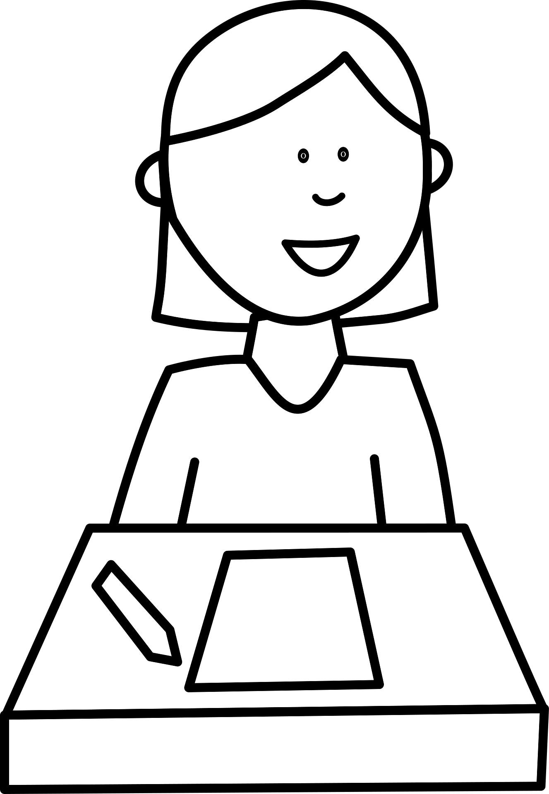

주요 업무 및 성과:
- 자사 커머스 플랫폼 웹 프론트엔드 신규 기능 개발 및 UI/UX 개선
- 웹 성능 최적화를 통한 초기 로딩 속도 30% 단축
- 레거시 코드 리팩토링 및 공통 컴포넌트 모듈화 진행

Frontend Engineer / Blogger
기술 블로그 운영을 좋아하며, 복잡한 문제를 단순하고 직관적인 코드로 해결하는 것에 열정을 가진 프론트엔드 개발자입니다. 새로운 기술을 탐구하고 기록으로 남기는 것을 즐깁니다.
주요 업무 및 성과:
설명: 이력서의 딱딱한 형식을 탈피하여 방문자가 블로그 글을 읽듯 편하게 볼 수 있는 동적 웹페이지입니다.
주요 기능: 카테고리별 동적 필터링, 아코디언식 본문 접고 펼치기 기능 구현
설명: 웹소켓을 활용하여 여러 사용자가 동시에 드로잉 및 텍스트 편집을 할 수 있는 협업 툴입니다.
기여도: 화이트보드 캔버스 영역 그리기 로직 및 실시간 동기화 프론트엔드 아키텍처 설계 (기여도 50%)
학점: 3.8 / 4.5
캡스톤 디자인 우수작 시상 (웹 기반 스케줄러 애플리케이션)